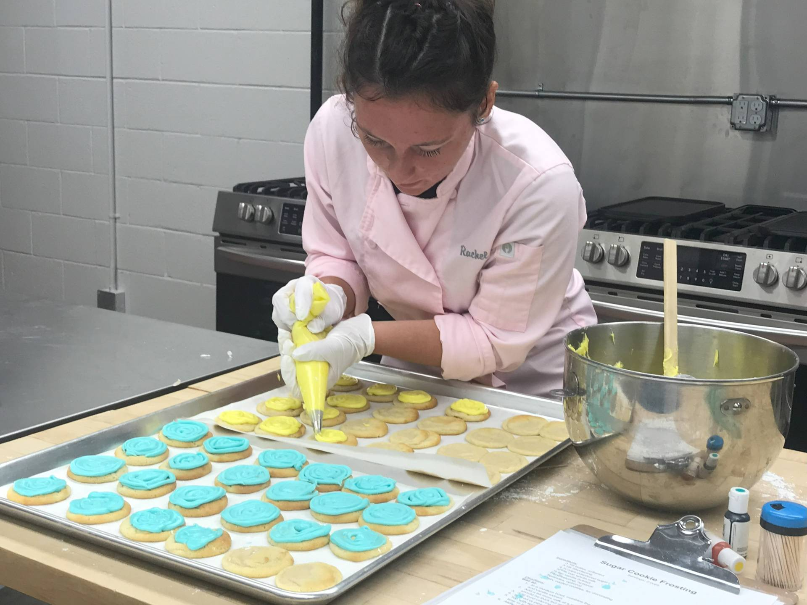

Breakfast

Lunch
Dinner + Dessert

Grocery List
- Sweet Potato
- 3+ Bananas
- Frozen Mixed Berries
- Frozen Broccoli
- Spinach
- Lunch Meat (I like ham or Turkey)
- Chicken (I use frozen)
- Eggs 18
- Yogurt (Brands: Stony Field, Colonial Supernaturals, Zoi: Honey)
- Shredded Cheese (Fiesta Blend)
- Sour Cream (8 ounce container)
- Butter Unsalted (I like to buy a few boxes and freeze them)
- Granola (Off Brand: French Vanilla)
- Tostada, Tortilla Chips, or Tortillas
- Bread (I either make bread or buy bread made from a baker)
- Semi-Sweet Chocolates Chips
- Can of Pineapple Chunks
- Can of Cream of Chicken Soup
- Chicken Broth (I prefer reduced salt, or unsalted)
- (All the necessary baking ingredients in bulk)
- (Other items I have on my grocery list: Frozen Beef, Apples, Tomato, Avocado, Bell Peppers, Carrots, Soup Items, Pasta, Pasta Sauce)